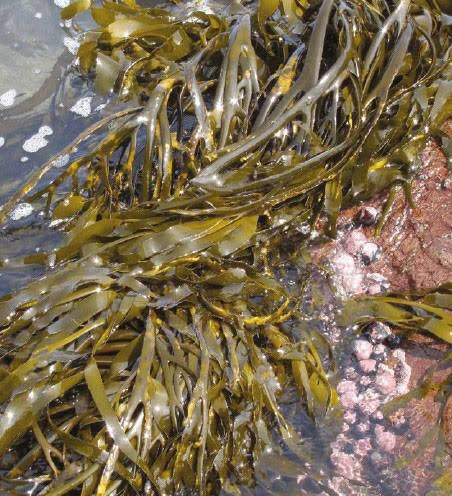
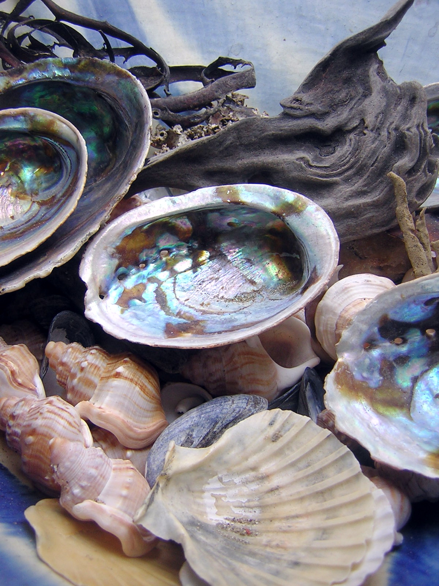

AquaBloom es una empresa dedicada a la producción de fertilizantes orgánicos a base de composta de Macrocystis pyrifera (alga marina) y conchas de molusco. Su enfoque principal es ofrecer un producto sustentable y ecológico, promoviendo la fertilidad del suelo y el crecimiento saludable de los cultivos sin afectar el medio ambiente. La empresa busca combinar innovación y sostenibilidad para brindar soluciones agrícolas eficientes y responsables.
AquaBloom es una empresa dedicada a la producción de fertilizantes orgánicos a base de Macrocystis pyrifera (alga marina) y conchas de molusco. Su enfoque principal es ofrecer un producto sustentable y ecológico, promoviendo la fertilidad del suelo y el crecimiento saludable de los cultivos sin afectar el medio ambiente. La empresa busca combinar innovación y sostenibilidad para brindar soluciones agrícolas eficientes y responsables.
Macrocystis es un género de algas pardas gigantes, principalmente Macrocystis pyrifera, conocida como "sargazo gigante" o "kelp gigante". Su uso en la agricultura es cada vez más popular debido a sus múltiples beneficios.
Las conchas de molusco (como ostras, mejillones y caracoles) son un subproducto marino con diversos usos beneficiosos en la agricultura. Están compuestas principalmente de carbonato de calcio (CaCO₃), lo que les otorga propiedades valiosas para la mejora del suelo y la nutrición de las plantas.
Importancia de la Agricultura en Casa
Cultivar alimentos en casa no solo garantiza productos frescos y saludables, sino que también promueve la autosuficiencia y el cuidado del medio ambiente.
Usar fertilizantes orgánicos, como los de AquaBloom, ayuda a enriquecer el suelo sin productos químicos dañinos, fomentando un ecosistema sostenible y saludable.